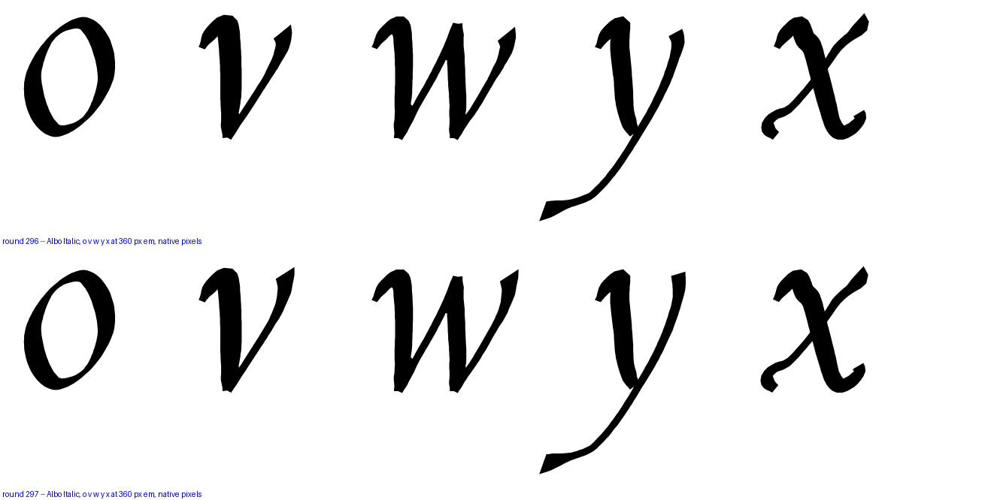
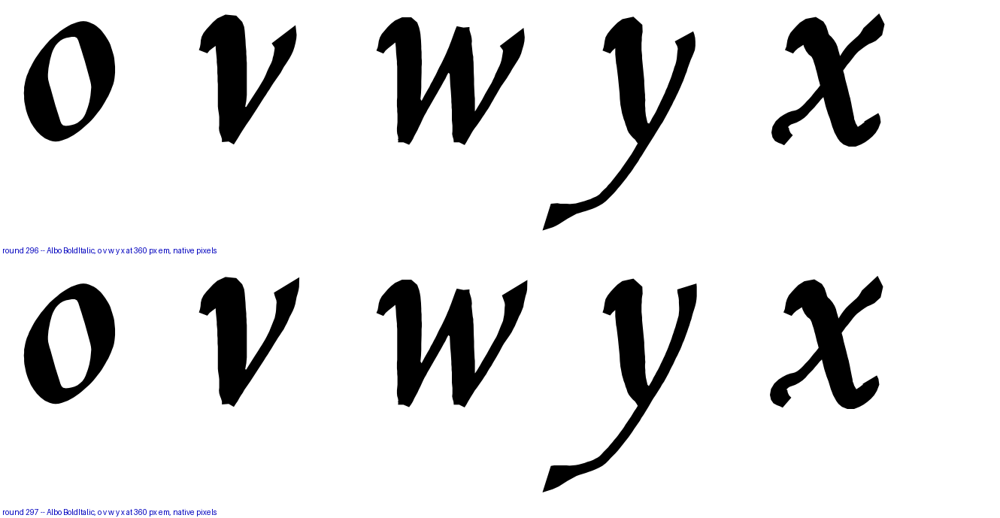
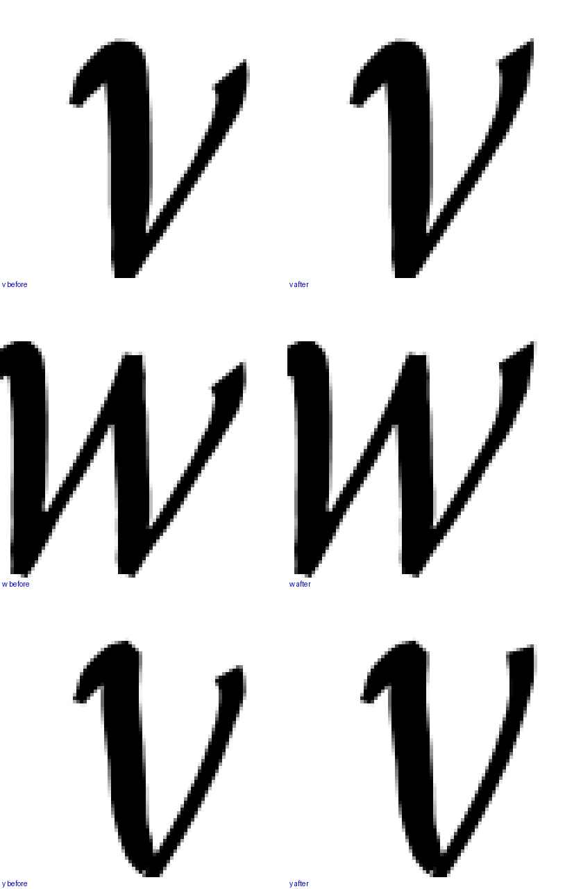
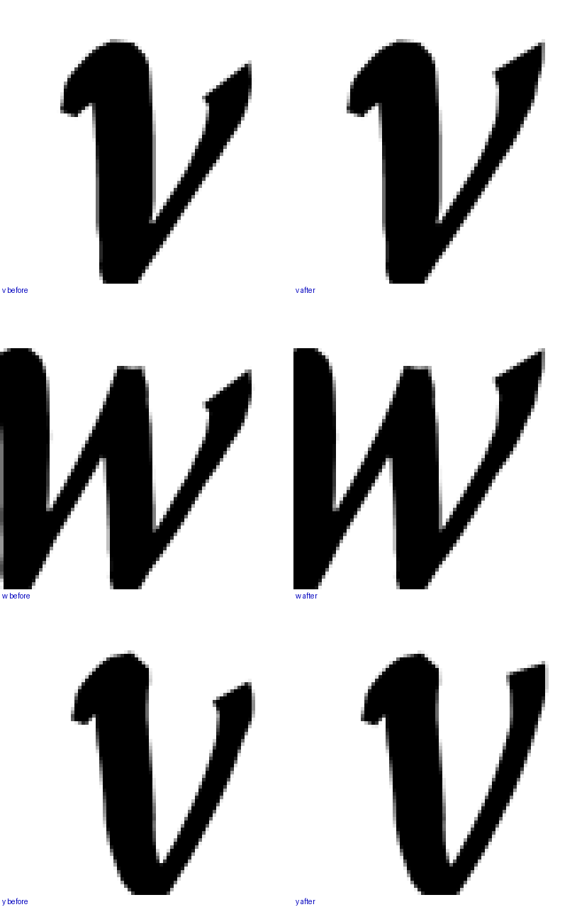
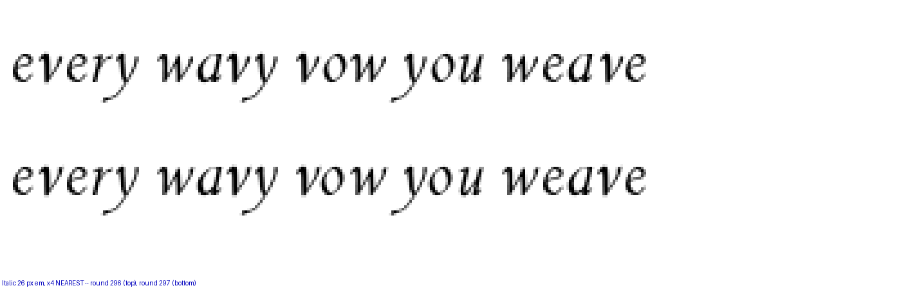
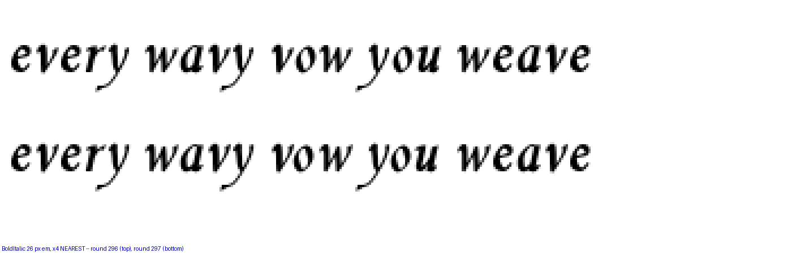

Round 297, shipped. Arm d — the terminal raised 0.10 of the x-height, taking each letter’s top right serif up to its own apex so the tilt goes to zero — on the v, the w and the y, at every italic weight. Before is the upper row of each figure and after the lower.
| v | w | y | |
|---|---|---|---|
| terminal top, x xh | 0.956 → 1.048 | 0.936 → 1.028 | 0.919 → 1.007 |
| tilt against its own apex | 0.085 → 0.000 | 0.091 → 0.000 | 0.109 → 0.021 |
The rest of the alphabet’s right-hand tops run 0.986 to 1.050, so all three are now inside it. The x (1.050) and the z (1.004) were already clean and are untouched.
You caught a bad measurement. My first table read the top of each letter’s right-hand half, and on a letter as narrow as the y that half catches the LEFT stroke’s crown — so the y read 1.028 and I called it clean. Read on the rightmost fifth, which is the terminal and nothing else, the y was 0.919, the worst of the three. A whole-half measure cannot see a terminal on a narrow letter.






A raised terminal reaches further right — the v’s ink to 462 design units against 453, the w’s to 652 against 642, the y’s to 487 against 483 — so the right-side fit was re-measured on all 24 pairs whose left letter moved, as closest approach in 2-D. Every delta is under 0.006 em against a 0.098 em lowercase median, they go in both directions (ve +0.005, yn −0.004), and the tightest pair in the set (yy at 0.063) does not move at all. No bearing changed. The reason is geometric and worth keeping: the terminal sits at the x-line, where the following letter’s left side is far away.
Raising the w’s terminal tripped a new hair-gate reading on the BoldItalic w. It is not a drawing fault: the outline exports as (412,107) (410,103) (410,105), a two-unit spur the integer grid left, whose neighbors are 2.83 apart — so round 295’s chord limit of 2.5 skipped it by a third of a unit. The same spur is in the shipped drawing, one unit over, where the turn falls just under the gate’s threshold.
The limit went to 3.0, measured first, because round 295 records three tolerance rules that each ate the arrows. Across all six shipped fonts it removes 17 points in total (2 to 4 per font), total ink moves by +0.0000%, no arrow moves at all, and the only glyph whose area moves by more than a hundredth of a percent is the ExtraLight’s currency sign, by 3 units of 29,099. Hair findings: BoldItalic 2 → 1, every other font unchanged. Counter dents and the collision sweep are identical before and after on every font.
Before you corrected me I measured the left entry serifs, and that reading stands on its own: the tip bottoms at 0.815 xh on the i, m, n, r and u — all five at the same figure — and at 0.745 to 0.750 on the v, w, x, y and z. The five diagonals hang a fourteenth of an x-height below the alphabet’s one entry line. Its dial is in the file at the shipped value, so those letters are byte-identical on that axis. Recorded, not acted on, because it is not what you asked about.